All RoadtripsJarní trip autem do rozkvětajícího světa
Kam vyrazit až začnou vylézat brouci, fujky
Pět jarních destinací pro nás. Jen příroda, spaní v autě a cesta max. 6 hodin — můžeme si prodloužit.
Najeď myší na kytku a přečti si hádanku, klikni a nech ji rozkvést.
Kam to vlastně jedeme?
Koukni na všech 5 míst
Mapa se načítá…
Jaro je rychlé a netrpělivé (stejně jako Tvoje přítelkyně) — sotva stihneš vidět jednu louku v plném květu, další už dokvétá. Těchhle pět míst mi sedlo přesně pro tenhle okamžik: kaňon, kde pár týdnů kvetou divoké pivoňky, louky se čtyřiceti druhy orchidejí, rašeliniště, kde tokají tetřívci, řeka plná bobrů a skály, kam smí i psí packy na vodítku. Žádná města, žádné fronty — jen auto, spacák a otevřené okno s čerstvým závanem pylu a hmyzu.
Doporučuje 10/10 Ozzyu, kteří se těší na hlídání k babičce.
Pět zastávek
Vyber si, kam pojedeme
🇨🇿 Znojemsko
Národní park Podyjí
202 km z Prahy~2:26psí ráj
Nejmenší, ale možná nejdivočejší český národní park. Meandrující kaňon řeky Dyje, skalní stepi a pár týdnů v roce — políčka divokých pivoněk, které jinde v Česku neuvidíš.
foto 1
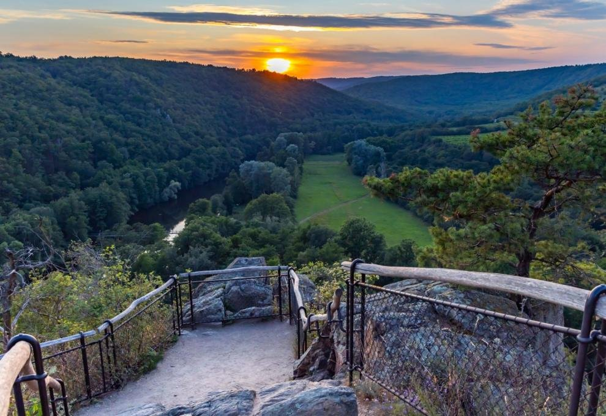
foto 2
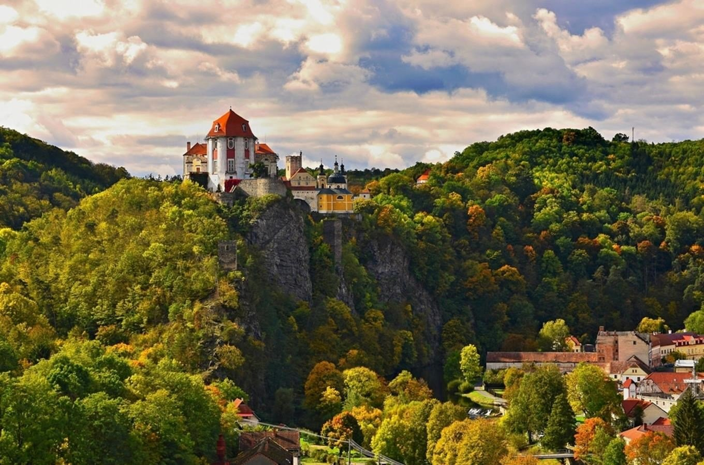
foto 3
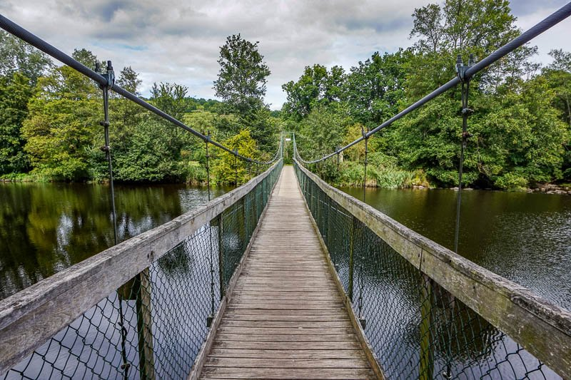
foto 4
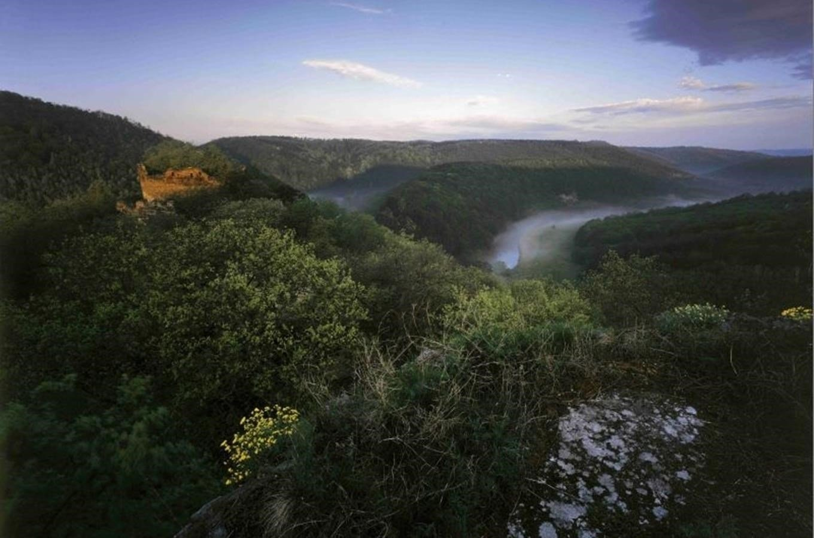
Co teď kvete a žije
Divoké pivoňky (Paeonia officinalis) na výslunných stráních kaňonu — kvetou zhruba od 2. poloviny dubna do května, termín se rok od roku posouvá podle počasí
Výr velký houká za soumraku a vymezuje si jarní revír přímo v parku
Bobr evropský a vydra říční se v posledních letech vrátili do Dyje
Rozkvetlé dubohabřiny a skalní stepi po celé délce kaňonu
Stellplatz / spaní
Camping Vranovská pláž (Vranov nad Dyjí) — tábořiště u přehrady s možností pro auta/karavany
Vozidla se v ochranném pásmu smí odstavovat jen v obcích — Vranov nad Dyjí, Podmolí, Čížov, Lukov
Výlety v okolí
Vranovská přehrada — jezero na koupání a výlety lodí, kousek od parku
Sealsfieldův kámen — nejznámější vyhlídka do kaňonu Dyje
Devět mlýnů — scenérie podél řeky s vyhlídkovou trasou
≈ 1 064 Kčpalivo tam a zpět (nafta ČR)
🇨🇿 Luhačovicko
Bílé Karpaty — Čertoryje
307 km z Prahy~3:15psí ráj
Louky, které patří k botanicky nejbohatším v Evropě — na rezervaci Čertoryje roste přes 48 druhů orchidejí. Na jaře k tomu motýli, seno a klid lázeňského kraje kousek odsud.
foto 1
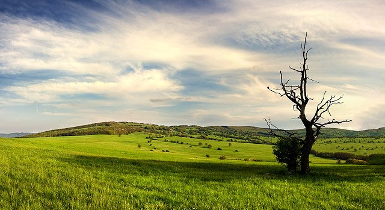
foto 2
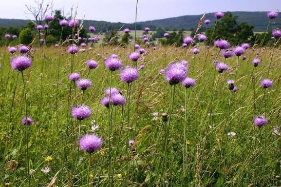
foto 3
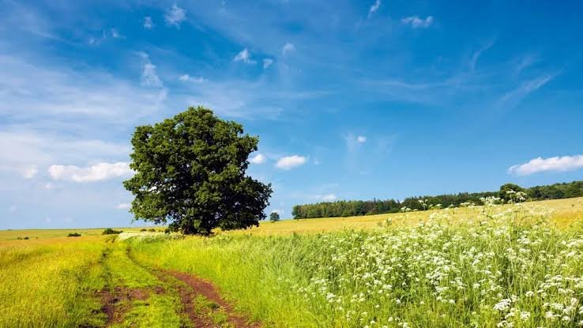
foto 4
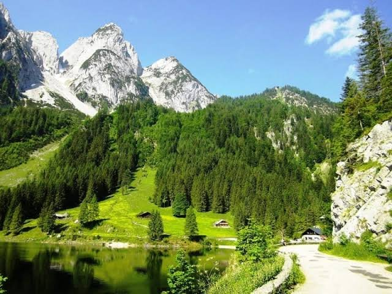
Co teď kvete a žije
Vstavač mužský znamenaný — poměrně běžný na jarních loukách
Vstavač vojenský — vzácnější, kdo ho najde, má štěstí
Autocamping Luhačovice — klasický autokemp, stání pro auta i karavany
Eurocamping Bojkovice — blíž k samotné Čertoryji
Výlety v okolí
Vodní nádrž Luhačovice — přehrada na procházky a koupání
Velká Javořina — nejvyšší vrchol Bílých Karpat se starým bukovým pralesem
Rozhledna Komonec — vyhlídka nad krajinou Luhačovického Zálesí
≈ 1 617 Kčpalivo tam a zpět (nafta ČR)
🇨🇿 Šumava
Kvilda & Boubínský prales
157 km z Prahy~2:00psí ráj
Nejblíž ze všech pěti. Jeden z posledních pralesovitých porostů střední Evropy, rašeliniště s masožravkami a jarní tokání tetřívků za svítání.
foto 1
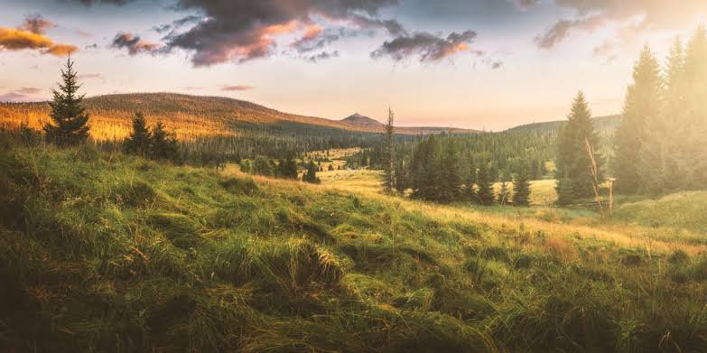
foto 2
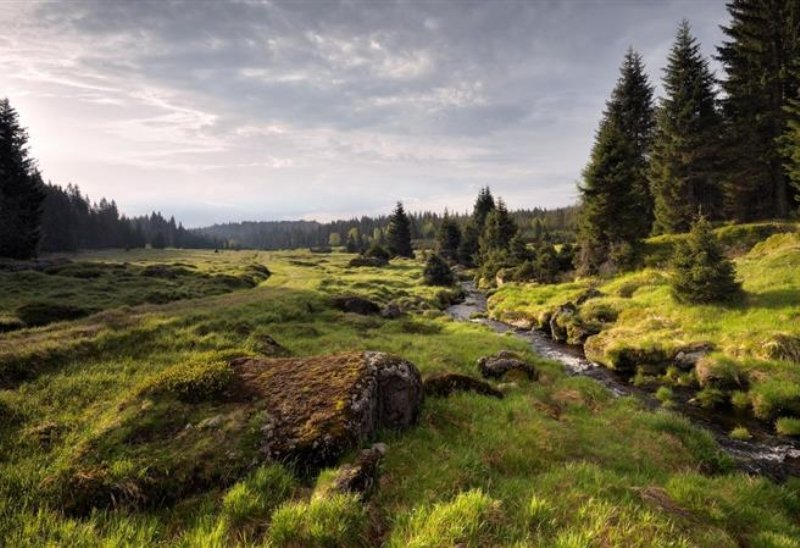
foto 3
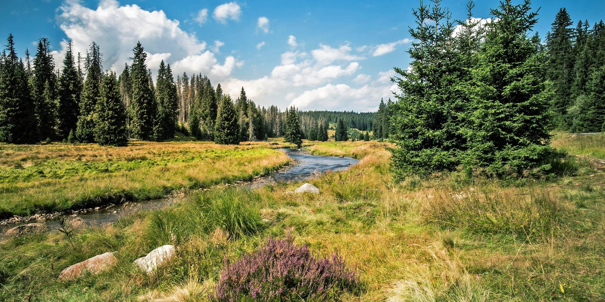
foto 4
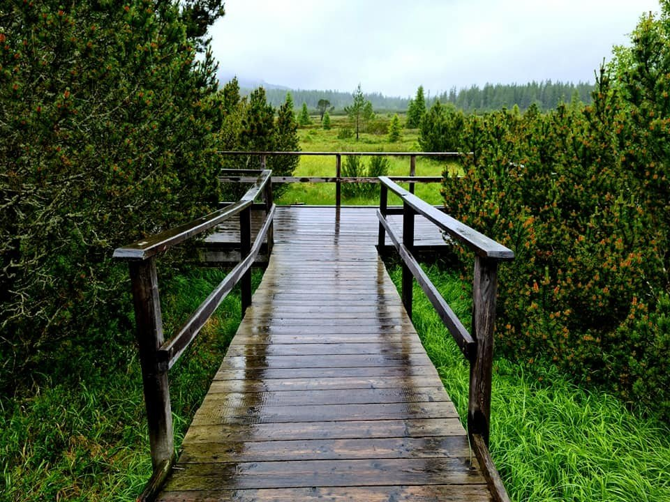
Co teď kvete a žije
Boubínský prales — čerstvá jarní zeleň starých bučin a jedlin
Rosnatky (masožravé rostliny) a suchopýr začínají na rašeliništích kolem Kvildy
Tetřívek obecný — tokání probíhá právě na jaře (duben–květen), za svítání na rašelinných loukách
Návrat tažných ptáků, na loukách bledule a sasanky
Stellplatz / spaní
Karavanové stání Kvilda — el. přípojka, voda, vylití odpadu, servisní balíček 100 Kč, příjezd po 13:00
Kemp pod Boubínem (Horní Vltavice) a Autokemp Zahrádky (Borová Lada) jako klasické kempy v okolí
Výlety v okolí
Bučina — rozlehlé horské louky s výhledem až na Alpy
Jezerní slať — rašelinné jezírko s naučnou stezkou
Chalupská slať — další z rašelinišť, domov vzácné flóry
≈ 827 Kčpalivo tam a zpět (nafta ČR)
🇦🇹 u Vídně
Nationalpark Donau-Auen
370 km z Prahy~3:45psí ráj
Jediná zahraniční zastávka — lužní les podél Dunaje u Orth an der Donau, jeden z nejbohatších jarních biotopů v Rakousku, s jednou z nejhustších populací bobrů v Evropě.
foto 1
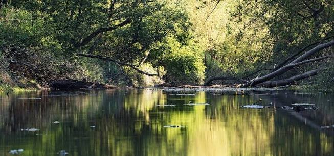
foto 2
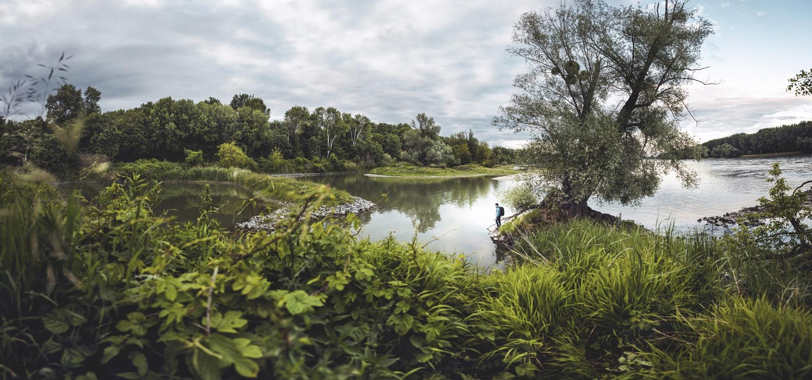
foto 3
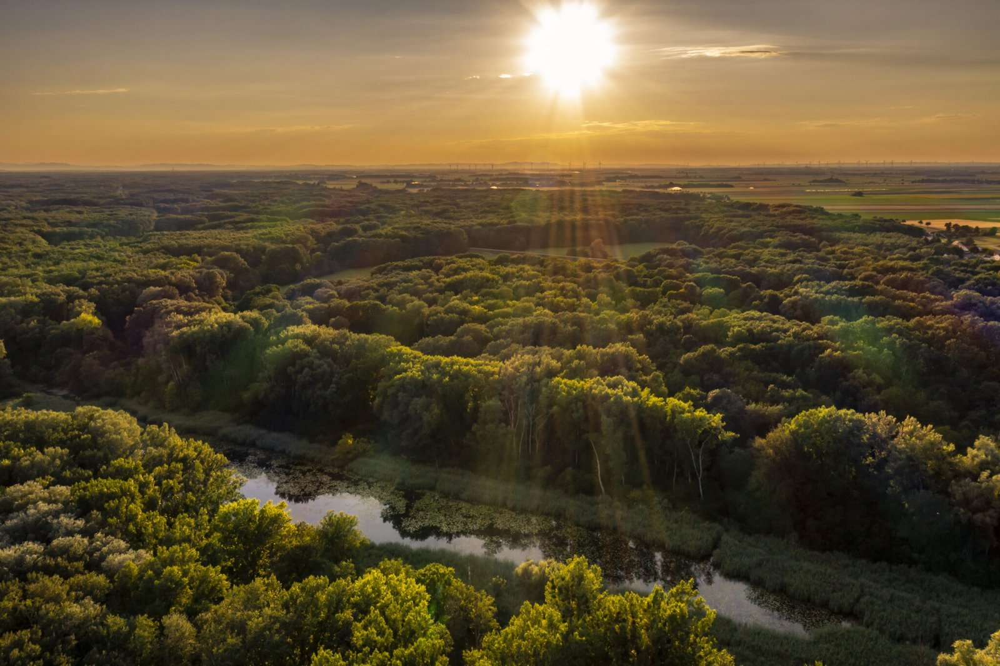
foto 4
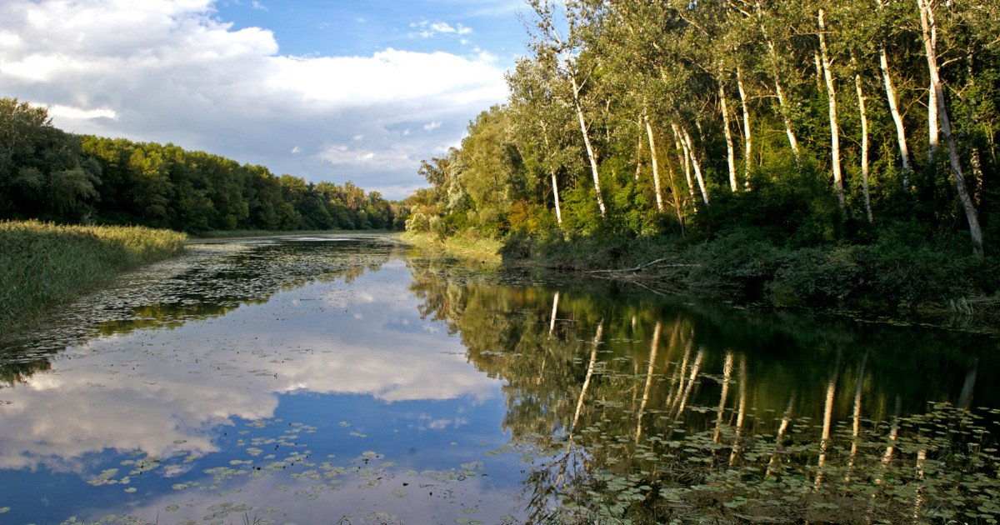
Co teď kvete a žije
Lužní les na jaře — kvetoucí podrost, rozvodněná ramena Dunaje
Bobr evropský — jedna z nejhustších populací v Evropě
Park leží na významné jarní migrační trase — desítky druhů tažných ptáků (volavky, moudivláček, ledňáček)
Stellplatz / spaní
Bezplatné parkoviště pro obytná vozidla v Orth an der Donau (Am Rosenhügel) — travnaté pásy, bez vody/el., psi povoleni, pár minut pěšky od zámku a návštěvnického centra
Alternativy pár km dál: zámek Eckartsau, Petronell-Carnuntum
Výlety v okolí
Lobau — další, divočejší část lužního pralesa blíž Vídni
Marchauen u Marchegg — říční niva řeky Moravy se známou kolonií čápů
Stopfenreuther Au — nejdivočejší, nejméně dotčená část národního parku
Pískovcové skalní město v čerstvé jarní zeleni, klidnější a míň nabité než v létě. Psi jsou tu vítaní na vodítku — jen na lodičkách po soutěsce ne.
foto 1
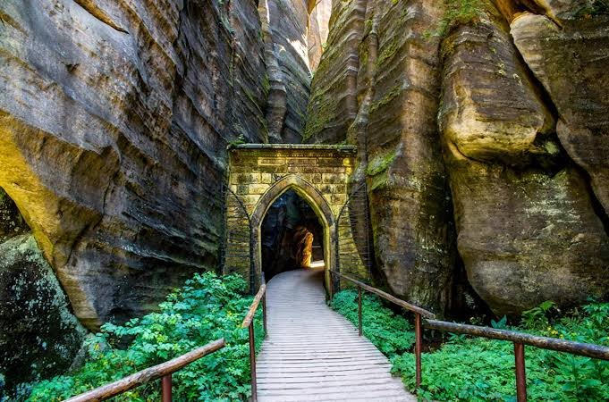
foto 2
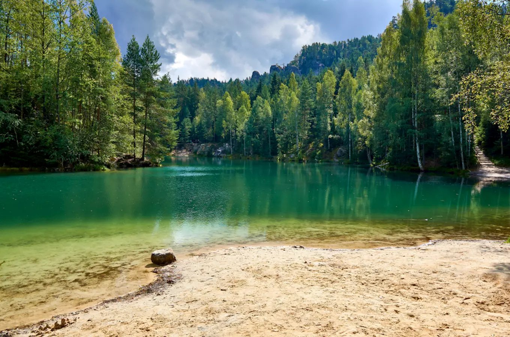
foto 3
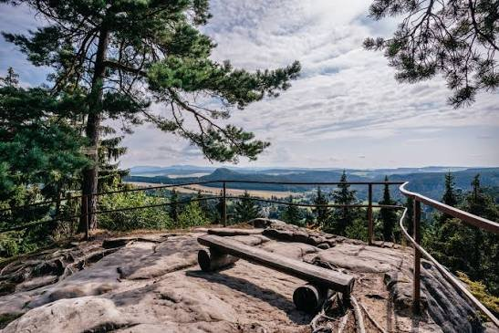
foto 4
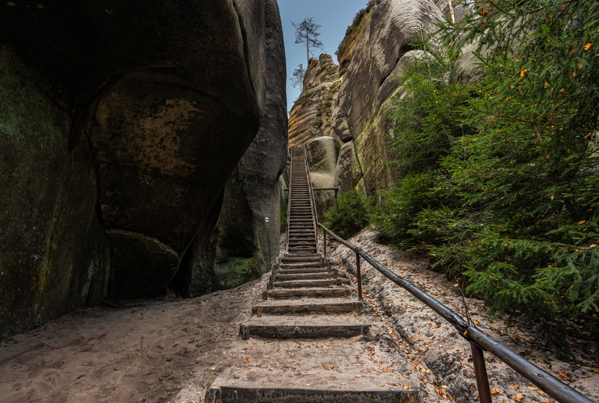
Co teď kvete a žije
Rozkvetlé bučiny na okrajích skal, čerstvá zeleň soutěsek
Jarní tah ptáků a hnízdění dutinových druhů v pískovcových stěnách
Mimo letní sezónu výrazně méně lidí — ideální na klidnou procházku se psy
Stellplatz / spaní
Stellplatz Adršpach (Caravanparking) — 900 m od centra Teplic nad Metují, el. přípojky, pitná voda, vylití odpadu, WiFi, nonstop celoročně — cca 150 Kč/3 h až 450 Kč/24 h